Práctica 2: Señales continuas
Carlos Daniel Martinez Durán 2MV1
Contents
Objetivos
- Manipulación básica de MATLAB
- Gráficas de señales realies y complejas continuas
- Transformación de señales continuas (escalamiento y traslaciones)
- Calculo de energía y potencia de señales continuas
Introducción
MATLAB es un lenguaje de alto desempeño diseñado para realizar cálculos técnicos; integra el cálculo, la visualización y la programación en un ambiente fácil de utilizar donde los problemas y las soluciones se expresan en una notación matemática. MATLAB es un sistema interactivo cuyo elemento básico de datos es el arreglo que no requiere de dimensionamiento previo. Esto permite resolver muchos problemas computacionales, específicamente aquellos que involucren vectores y matrices, en un tiempo mucho menor al requerido para escribir un programa en un lenguaje escalar no interactivo tal como C o Fortran.(Moore, 2009, pp.1-2)
Historia
En 1984 surge la primera versión, creado por Cleve Moler, con la idea de usar paquetes de subrutinas escritas en Fortran en los cursos de Análisis Numérico y Algebra Lineal, sin tener una necesidad de programas que usaran este lenguaje. El lenguaje de programación M se creó en 1970 proporcionando un acceso sencillo al Software de matrices LINPACK y EISPACK sin tener que hacer uso del lenguaje Fortran. Ya en 2004 se apreciaba que MATLAB era usado por aproximadamente más de un millón de personas, tanto académicos como empresarios.(Acerca de MathWorks, 2018)
Existen varias alternativas de software libre a Matlab, aqui presento algunas opciones con sus respectivos "manuales de uso", como lo son: GNU Octave, Python, Maxima y Scilab, este último recomendado por (Departamento de Simulación de Procesos, 2018)
Desarrollo
Se plantea la solución a siete ejercicios, donde cada uno requiere del uso de Matlab como herramienta de cálculo y análisis.
Ejercicio 1
Crea una función que se llame fun1 y reciba dos parametros y 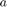 la función debe regresar la evaluación 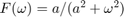, esta función debe trabajar con 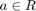 y 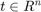. Debe mostrar su codigo en el reporte (sin ejecutar).
clear; clc; close all a1=5; % Se implementa input('Ingrese el valor de a') en codigo fuente, puesto que causa conflicto con Publish w1=-20:0.1:20; % Se implementa input('Ingrese el vector w') F=fun1(a1,w1); plot(w1,F) grid on; ax = gca; ax.Box = 'off'; ax.XAxisLocation = 'origin'; ax.YAxisLocation = 'origin'; title('F(\omega)=a/(a^2+\omega^2)')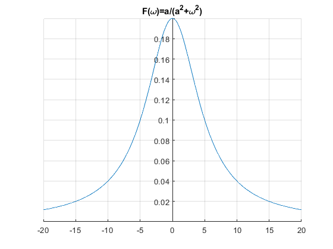
function f1=fun1(a,w) %colocare aqui la función fun1, puesto que causa f1=a./(a^2 + w.^2); %conflicto al monmento de realizar la publicación en Matlab end
Ejercicio 2
Construya una función que gráfique funciones de 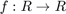 en el formato de su elección y pruebe su código mostrando la gráfica de 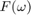 vs en el intervalo 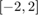 para , no debe incluir el código, solo el uso de la función para mostrar la gráfica
Ejercicio 3
Construya una función que gráfique funciones de 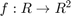 en el formato de su elección y pruebe su código mostrando la gráfica de la transformada de Fourier 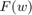 en 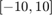 de la función 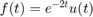,puede utilizar una función anonima para este fin, no debe incluir el código, solo el uso de la función para mostrarla gráfica. Reporte la gráfica de 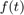 de 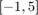 (recuerde que ya tiene una función para eso). Reporte del espectro de magnitud y del espectro de fase en , (puedes con sultar con help la descripción de abs, angle, atan2). Solo reporte las graficas
Ejercicio 4
Realiza las mismas operaciones que Lathi en las secciones M1.1 a M1.4 que se encuentra al final del capítulo 1 y antes de la sección de problemas, cambie los inline por funciones anonimas.
Solucion
Algunas funciones simples o complejas, se pueden representar más fácilmente con el uso de Funciones anónimas en Matlab, las cuales pueden ser utilizadas de manera simbólica para los cálculos requeridos a partir de una entrada. A continuación se muestra una pequeña aplicación de este tipo de funciones tomada de (Lathi, 2005, pp. 92-98).
- M1.1 Realizar la gráfica de 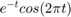, con
![$t=[-2,2]$](ASySPrac02CarlosMartinez_eq15768214732677863818.png) con incrementos de 1 y de 0.01.
con incrementos de 1 y de 0.01. - M1.2 Realizar la gráfica de 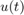, con con incrementos de 1 y de 0.01.
- M1.3 Realizar la gráfica de 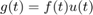, 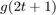, 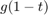 y 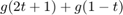 con con incrementos de 1 y de 0.01.
- M1.4 Cálculo númerico y simbólico de la energia de una señal
f= @(t) exp(-t).*cos(2*pi*t); %Función anónima para M1.1 u= @(t) heaviside(t); %Función anónima para M1.2 g= @(t) f(t).*u(t); %Funcion anónima para M1.3 x= @(t) exp(-t).*(u(t)-u(t-1)); %Función anónima para M1.4 t1=-2:2; %1er ejmeplo t un vector de -2 a 2, de 1 en 1 t2=-2:0.01:2; %2do ejemplo t un vector de -2 a 2, de 0.01 en 0.01 for i=1:4 switch i case 1 %M1.1 Gráfica de e^{-t}cos(2\pit) figure for j=1:2 if j==1 T=t1; else T=t2; end subplot(1,2,j); plot(T,f(T),'g') grid on; ax = gca; ax.Box = 'off'; ax.XAxisLocation = 'origin'; ax.YAxisLocation = 'origin'; if j==1 title('e^{-t}cos(2\pit) con t=[-2:2]') else title('e^{-t}cos(2\pit) con t=[-2:0.01:2]') end end case 2 %M1.2 Gráfica de u(t) figure for j=1:3 subplot(3,1,j); if j==1 plot(t1,u(t1),'g'); title('u(t) con t=[-2:2]') elseif j==2 plot(t2,u(t2),'r'); title('u(t) con t=[-2:0.01:2]') else p=u(t2)-u(t2-1); plot(t2,p); title('p(t)=u(t)-u(t-1); con t=[-2:0.01:2]') end grid on; ax = gca; ax.Box = 'off'; ax.XAxisLocation = 'origin'; ax.YAxisLocation = 'origin'; end case 3 %M1.3 Gráfica de e^{-t}cos(2\pit)u(t) for j=1:4 figure if j==1 plot(t2,g(t2),'r'); title('g(t)=f(t)u(t)') else plot(t2,g(2*t2 +1),'g'); title('g(2t+1)') end if j==3 plot(t2,g(1-t2),'b'); title('g(1-t)') end if j==4 q=g(2*t2 +1)+g(1-t2); plot(t2,q,'y'); title('g(2t+1)+g(1-t)') end grid on; ax = gca; ax.Box = 'off'; ax.XAxisLocation = 'origin'; ax.YAxisLocation = 'origin'; end case 4 %M1.4 Integración numerica y estimacion de energía de una señal t=0:0.01:1; Ex=sum(x(t).*x(t)*0.01); %Ex=0.4295 syms t %Para calculo simbolico f=exp(-2*t)*(heaviside(t)-heaviside(t-1)); EX=vpa(int(f,t,0,1)); % EX=0.43233235838169365405300025251376 end end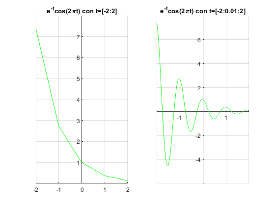 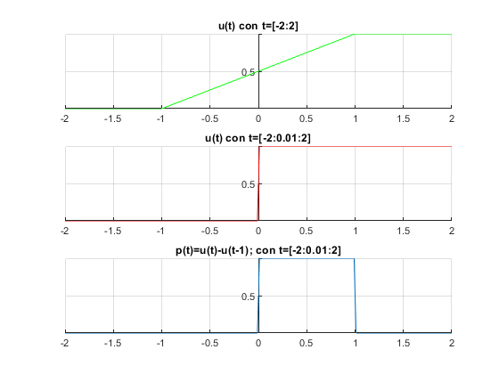 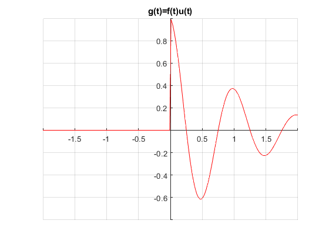
 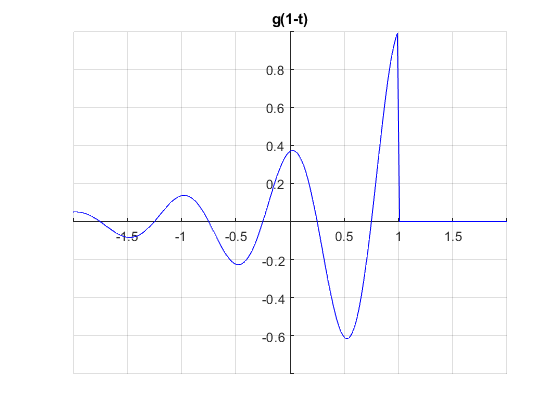 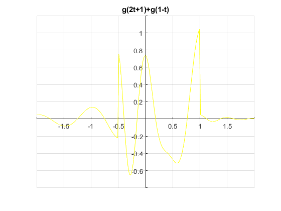
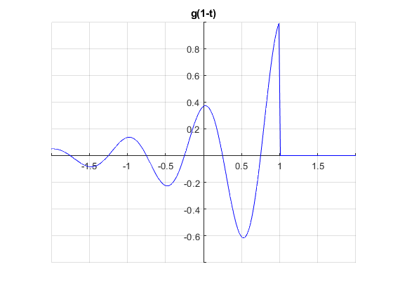 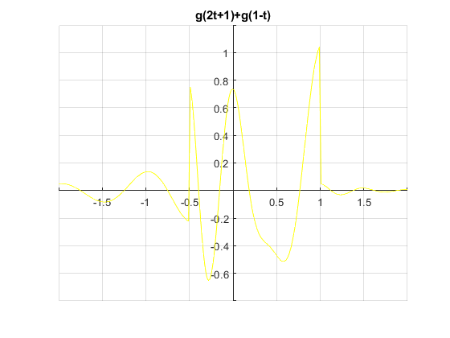 Como podemos observar las funciones anónimas, toma los valores de t que ingresemos sin la necesidad de tener que resscribir el programa para cada caso.
Ejercicio 5
Resuelve el problema 1.2.2 usando las herramientas del paso anterior.
Para la señal 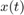, graficar:
- 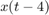
- 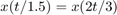
- 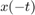
- 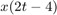
- 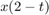
u= @(t) heaviside(t); x= @(t) t; f= @(t) x(t).*(2.*u(t)-u(t+4)-u(t-2)); t=-10:0.001:10; for i=1:6 subplot(3,2,i) switch i case 1 F=f(t); plot(t,F); title('x(t)') case 2 F=f(t-4); plot(t,F); title('x(t-4)') case 3 F=f(2*t/3); plot(t,F); title('x(2t/3)') case 4 F=f(-t); plot(t,F); title('x(-t)') case 5 F=f(2*t -4); plot(t,F); title('x(2t-4)') case 6 F=f(2-t); plot(t,F); title('x(2-t)') end grid on; ax = gca; ax.Box = 'off'; ax.XAxisLocation = 'origin'; ax.YAxisLocation = 'origin'; end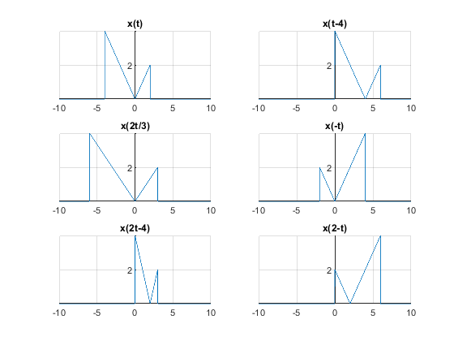
Ejercicio 6
Escriba una función que se llame energia que reciba como argumento una función (anonima o simbolica) y que regrese el calculo de la energía, para esto puede resultar útil investigar las instrucciones int , integral Se presupone utilizar el código solo con funciones de energia. Muestre el código sin ejecutar, y posteriormente resuelva el problema 1.1.3
syms t fx=input('Función de energía '); a1=input('Limite inferior '); b1=input('Limite superior '); E_x=energia(fx,a1,b1) function E=energia(e,a,b) syms t e1=(abs(e))^2; E=int(e1,t,a,b); end
1.1.3 a) Encuentra la energia de cada una de las señales y 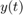, descritas en la fig. P1.1-3a y P1.1-3b, grafica y encuentra la energía de las señales 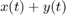 y 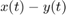. b) Repite lo mismos pasos para las señales mostradas en la fig. P1.1-3c
t=-10:0.1:10; u= @(t) heaviside(t); xa=u(t)-u(t+2); ya=u(t)-2.*u(t-1)+u(t-2); xb=sin(t).*(u(t)-u(t-2*pi)); yb=u(t)-u(t-2*pi); xc=sin(t).*(u(t)-u(t-pi)); yc=u(t)-u(t-pi); for i=1:6 subplot(3,2,i) switch i case 1 plot(t,xa); title('a) x(t)') case 2 plot(t,ya,'r'); title('a) y(t)') case 3 plot(t,xb); title('b) x(t)') case 4 plot(t,yb,'r'); title('b) y(t)') case 5 plot(t,xc); title('c) x(t)') case 6 plot(t,yc,'r'); title('c) y(t)') end grid on; axis([-1 8, -1.5 1.5]) end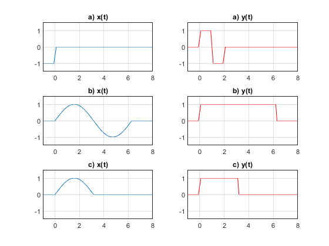
*Figura P1.1-3*
- a) 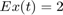 ; 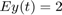 ; 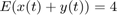 ; 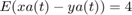
- b)
 ; 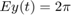 ; 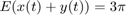 ; 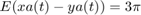
; 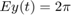 ; 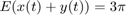 ; 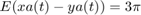 - c)
 ; 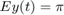 ; 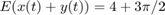 ; 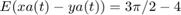
; 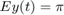 ; 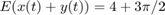 ; 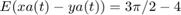
Ejercicio 7
Escriba una función que se llame potencia que reciba como argumento una función (anonima o simbolica) y que regrese el calculo de la potencia para esto puede resultar útil investigar las instrucciones int , integral Se presupone utilizar el código solo con funciones de potencia. Muestre el código sin ejecutar, y posteriormente resuelva el problema 1.1.4
syms p p=t^3; P1=input('Función de potencia '); T1=input('Periodo de la Función '); PX=potencia(P1,T1) function Px=potencia(P,T) syms t c P1=(abs(P))^2 Px=(1/T)*int(P1,t,-T/2,T/2); end
1.1.4 a) Encuentra la potencia de la señale periodica , descritas en la fig. P1.1-3a y P1.1-3b, grafica y encuentra la potencia así como el valor rms de las señales: a) -$x(t)$, b) 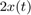 y c) 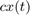
- 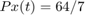
- a) 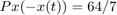
- b)
- C)
Referencias
- Acerca de MathWorks. (26 de Octubre de 2018). Obtenido de MathWorks Sitio web: https://la.mathworks.com/company.html?s_tid=hp_ff_a_company
- Bonafonte, A. (29 de Mayo de 2008). Transformada de Fourier. Obtenido de Universidad Politécnica de Catalunya: https://ocw.upc.edu/sites/all/modules/ocw/estadistiques/download.php?file=11480/2011/1/52847/tema2.transf_fourier_v29may2009-2742.pdf
- Departamento de Simulación de Procesos. (2018). Conoce Scilab, una alternativa gratuita a Matlab. octubre 26, 2018, de Universidad Politécnica de Valanecia Sitio web: http://sipaq.webs.upv.es/conoce-scilab-una-alternativa-gratuita-a-matlab/
- Lathi, B. (2005). Linear Systems and Signals. E.U.A.: Oxford University Press
- Moore, H. (2009). MATLAB for Engineers. E.U.A.: Prentice Hall.